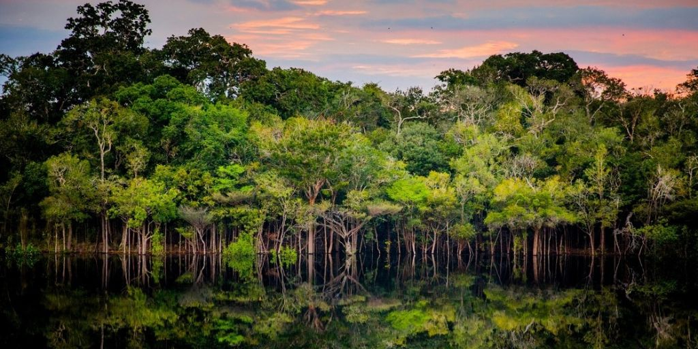
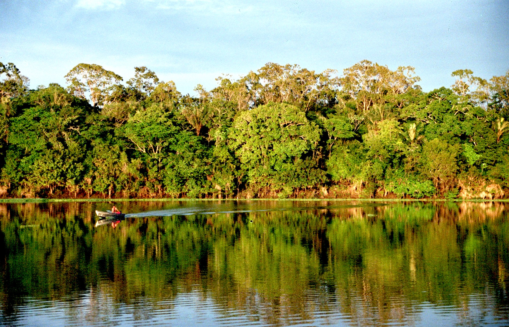

Amazônia





INFORMAÇÕES SOBRE O BIOMA
Área Total do Bioma
Área de aproximadamente 7.413.827 km², que se estende por oito países: Bolívia, Brasil, Colômbia, Equador, Guiana, Peru e Venezuela e Suriname mais o território da Guiana Francesa.Clima
- É caracterizado como quente e úmido, com temperaturas médias anuais elevadas, com pouca variação, e bastante chuva por períodos de até 6 meses.
- Temperatura média: entre 24 e 26 °C;
- Umidade: em torno de 80%;
- Índice pluviométrico: entre 1.000 e 3.000 mm por ano.
Relevo
- A maior parte do relevo possui altitude entre 100 e 200 metros acima do nível do mar. Uma exceção é o Pico da Neblina, com 3014 metros de altitude, considerado o ponto mais alto do Brasil.
- O relevo pode ser dividido da seguinte forma:
Planície de inundação: região periodicamente alagada;
Planalto amazônico: região com altura máxima de 200 metros;
Escudos cristalinos: região com altura acima de 200 metros. Hidrografia
- A amazônia possui a maior bacia hidrográfica do mundo, a bacia amazônia, com 6.100.000 km2 e mais de mil afluentes. A região detém cerca de 20% das reservas mundiais de água doce.
- Fazem parte da hidrografia amazônica os rios Amazonas, Araguaia, Nhamundá, Negro, Solimões, Tocantins, Trombetas, Xingu, Purus, Juruá, Japurá, Madeira, Tapajós e Branco.
- O rio Amazonas, com 6.992,06 km, é considerado o maior rio do mundo em volume de água e em extensão. Ele deságua no Oceano Atlântico 175 milhões de litros d’água por segundo.
Vegetação
- O bioma Amazônia, que detém a maior floresta tropical do mundo, é formado em grande parte pela floresta ombrófila densa e a floresta ombrófila aberta.
A vegetação pode ser dividida em três grandes grupos:
Mata de várzea: característica de altitudes baixas, onde as inundações são periódicas
Mata de igapó: característica de regiões alagadas, onde as inundações são permanentes.
Mata de Várzea
Mata de terra firme: característica de altitudes elevadas, representa a maior parte da floresta amazônica.
Mata de Igapó
Exemplos de espécies nativas da flora amazônica são: seringueira, cupuaçu, tucumã, castanheira e sumaúma (o "gigante da Amazônia", que pode atingir 60 m de altura).
Mata de Terra Firme
Fauna
- A fauna amazônica é bastante diversificada, sendo responsável por cerca de 20% da diversidade animal do planeta, com espécies exclusivas do local e muitas em risco de extinção.
- São exemplos de animais da Amazônia: onça-pintada, um dos maiores felinos do mundo, sucuri, uma das maiores cobras do mundo, pirarucu, um dos maiores peixes de água doce mundo, e mico-leão-dourado, um símbolo do Brasil e que hoje está entre as espécies ameaçadas de extinção.
Visão Geral
- O bioma da Amazônia é uma vasta região de floresta tropical localizada principalmente no Norte do Brasil, estendendo-se também por partes de países vizinhos, como Peru, Colômbia e Venezuela. Considerado o maior bioma florestal tropical do mundo, a Amazônia abriga uma enorme diversidade de espécies de fauna e flora, muitas das quais ainda pouco conhecidas. Esse bioma é fundamental para a regulação climática global, pois atua como um importante sumidouro de carbono, além de ser essencial para o ciclo hidrológico, com suas bacias e rios que influenciam o regime de chuvas na América do Sul. A Amazônia também é lar de várias comunidades indígenas e povos tradicionais, que dependem diretamente de seus recursos naturais. No entanto, enfrenta ameaças sérias devido ao desmatamento, queimadas ilegais e a expansão agrícola, o que coloca em risco sua rica biodiversidade e os serviços ecológicos essenciais que proporciona.
Curiosidades
- Maior floresta tropical do mundo: A Amazônia cobre cerca de 5,5 milhões de quilômetros quadrados, o que representa aproximadamente 40% da floresta tropical remanescente do planeta.
Biodiversidade impressionante: A Amazônia abriga cerca de 10% de todas as espécies conhecidas no planeta, incluindo plantas, animais e microrganismos. Estima-se que existam até 400 bilhões de árvores na região.
Rios gigantescos: O Rio Amazonas é o maior rio do mundo em volume de água e um dos mais longos, com cerca de 7.000 km de extensão. Sua bacia abrange mais de 6 milhões de quilômetros quadrados.
Amazônia e o oxigênio: Apesar de ser conhecida como o "pulmão do mundo", a Amazônia não é a principal fonte de oxigênio do planeta, como muitas pessoas acreditam. As florestas tropicais, incluindo a Amazônia, produzem oxigênio, mas também consomem uma quantidade similar devido à respiração das plantas e à decomposição de matéria orgânica.
Amazônia subterrânea: Sob o solo da floresta, existe um "mar de água subterrânea" chamado de aquífero Alter do Chão, que tem volumes de água potável capazes de abastecer toda a população mundial por séculos.
Fauna exótica: Além dos famosos jaguares e onças, a Amazônia é lar de animais exóticos como o peixe-boi, o boto cor-de-rosa e a tarântula-goliath, a maior aranha do mundo.
Plantas com propriedades medicinais: Cerca de 25% dos medicamentos utilizados no mundo têm origens em plantas da Amazônia, e muitas ainda não foram estudadas.
Ritmos e sons: A Amazônia é uma verdadeira orquestra natural. O som das cigarras, macacos e aves faz parte de um dos ecossistemas mais sonoros do planeta.
Indígenas e biodiversidade: Existem cerca de 350 etnias indígenas na Amazônia, muitas das quais têm um conhecimento profundo sobre a flora e fauna locais, utilizando plantas para curas e rituais, muitas vezes sem que a ciência moderna tenha descoberto suas propriedades.
A Amazônia e o clima global: A Amazônia desempenha um papel crucial na regulação do clima global, influenciando a precipitação e o padrão de ventos em várias partes do mundo, além de ajudar a controlar os níveis de dióxido de carbono na atmosfera.


Mico-Leão-Dourado

Pirarucu

Imagem de Família na Amazônia